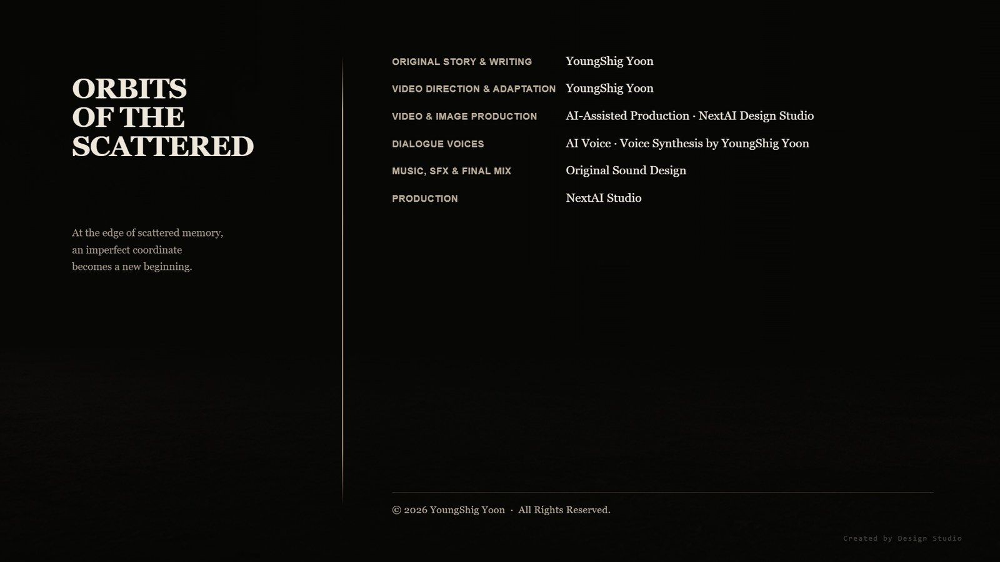

I. Ara
Even after Maldek was gone, Ara continued for a time to feel the planet turning.
The pressure of collapsing continents and rising seas, the friction of rock breaking through the atmosphere and scattering, the sensation of the planet's center being pushed little by little from where it belonged—all of it remained inside her body.
Maldek had already become part of the asteroid belt. The blue dome cities, the resonance towers, and the Chiwoo observatories had all been divided into countless fragments circling on dark orbits. Yet Ara still felt the planet turning beneath her feet.
It was not sensation.
It was habit.
Even after a planet vanished, the body went on believing in the world where it had lived.
Ara sat in the underground resonance chamber of the satellite that would become the Moon. The room was wide, but the ceiling was low. It was not a space made to bring something to arrival, like the gates of Maldek. It was a space made to hold those who had already arrived so they would not disappear.
Round storage cells lined the walls. Each was filled with a liquid clear as glass, and within it floated thin filaments of light resembling human neural networks.
They were the memories of Chiwoo survivors.
When Ara closed her eyes, the memories inside the cells woke all at once.
A song a mother used to sing.
The smell of rain in Maldek's southern hemisphere.
The tremor on the day the first gate opened.
The red bombardment of the Martian fleet.
The inner wall where a father disappeared.
And Las.
A child's hand pressed against glass.
Ara opened her eyes.
“That memory isn't yours.”
There was no one in the room. Yet Las's voice sounded without air.
Ara did not answer. She could not tell whether Las was here or whether a memory of her own had simply revived.
Chiwoo resonance read the echoes of a place. An old memory could sound like a voice in the present. The dead sometimes went on speaking, unaware that they were dead.
Ara placed her hand against the glass.
“What does it feel like to carry a memory that isn't yours?”
This time Las answered in person.
“Unpleasant.”
He stood at the entrance to the resonance chamber. It was the thirteenth day after Maldek's destruction. Since descending from a surviving ship of the Martian fleet, he had not once rested his body properly.
The circuits beneath his skin were broken in several places, and the neural shield behind the left side of his neck was burned black. Las knew that his body smelled scorched. He did not care.
“Then erase it,” Ara said.
“What I can erase isn't you.”
Las looked deeper into the chamber.
“Are those the survivors in storage?”
“Memories.”
“You called them survivors.”
“Some of them still have bodies.”
“And the rest?”
“They're waiting to return.”
Las gave a short laugh. It sounded less like laughter than a circuit misfiring.
“Return to what? They have no bodies.”
“Having no body doesn't mean you can't return.”
“Is that how your people define death?”
“Death changes the moment you define it.”
“That isn't an answer.”
“You think every answer has to be a number.”
“At least numbers don't stand in for someone else's memories.”
Ara looked at Las's face. He was still angry. But it was not the anger he had carried before Maldek was destroyed.
Now his anger had no direction.
It bore down with equal weight on the Rene war system, on the Chiwoo, and on himself.
Ara knew that weight. She carried the same thing.
“A signal came from Mars,” Las said.
“From where?”
“Four underground cities. I can't confirm biological activity.”
“Then you don't know if anyone is alive.”
“My model can calculate the probability of survival.”
“The probability of survival and a survivor are different things.”
“That's why I need you.”
Ara looked at him.
She knew he had just returned her own words to her.
“To find out whether I'm wrong?”
“To find out whether my calculations are right.”
“Your calculations are always right.”
“No. Since you showed me 0.4 degrees, I know they aren't.”
Fragments of Maldek drifted past the lunar window. From a distance they looked like stars. But they were not stars. They were pieces of a home that had failed to become one.
Ara took out two minerals and closed her hand around them.
“Where do we go?”
“Mars.”
“There is no gate from the Moon to Mars.”
“We can make one.”
“Here?”
“If you tell me where there is a place to arrive.”
Ara looked down at the minerals.
The worn marks on their surfaces fitted her fingers.
Even after Maldek was gone, the hand remembered.
Stills · I. Ara


II. Las
Las did not trust the Moon's orbit.
The Moon moved too quietly. When it had been one of Maldek's defense satellites, thousands of resonance lines had flowed across its surface. Most were now dark, and the devices that remained had been cut off from the outside.
But Las knew the satellite was not completely dead. Deep underground, a signal of extremely low frequency continued to emerge.
The signal did not repeat.
A repeating signal was not the signal of a Rene. Repetition was the language of commands and specifications. The signal now coming from the Moon was slightly different each time.
Las did not call it life.
He did not yet believe in things he could not call life.
“To raise the gate, we need an intermediate load layer.”
He erected three metal columns before the Moon's sealed gate. The columns followed the same specifications as Maldek's construction series, but their alloy came from the Moon's mining facilities.
Ara was examining the outer ring of stones. There was no building there, no device. Only a few stones forming a circle.
“The intermediate layer bears no load,” she said.
“A gate bears heat.”
“The arrival layer's heat is already recorded.”
“So you trust records.”
“They last longer than the memories you trust.”
Ara ran a finger over one stone. Its surface was rough, but at one height it had been worn smooth.
The mark of someone who had rested a hand there for a very long time.
“There was one observer here.”
“Your evidence?”
“The wear runs in one direction.”
Las turned on a portable scanner. The wear pattern appeared on its display.
“Two people may have used it in turn.”
“No.”
“Why not?”
“Two people's fears are not the same.”
“Fear isn't a measurement category.”
“That's why you can't read it.”
Las increased the scanner's sensitivity. It analyzed the direction of microscopic crystals and residual heat on the stone. Where a palm had touched it, the crystalline alignment had shifted by the slightest amount.
“One person held this for a lifetime,” he said.
Ara looked up.
“Do you believe me now?”
“Believing the fact is different from believing your interpretation.”
“You always hide behind that distinction.”
“You erase that distinction and use other people's memories as though they were yours.”
Ara did not answer.
Las adjusted the columns. The first, the second, the third. The Rene alignment algorithm automatically bound all three to a single axis.
A figure appeared.
Gate stability: 61 percent.
Las swore under his breath.
“How far is Mars?” Ara asked.
“Under the current orbital conditions, 220 million kilometers.”
“Current is a strange word.”
“Why?”
“Mars's orbit changed when Maldek vanished.”
“And?”
“Mars is still moving. The Mars you calculated is the Mars from a moment ago.”
“I calculate the orbit at arrival.”
“What I can read isn't Mars at the time of arrival.”
“Then what?”
“The Mars worthy of arrival.”
Las glared at her.
“Only your people would ask whether a planet is worthy.”
“Planets choose nothing.”
“Which makes them easier to kill.”
Blue light formed between the three columns. The gate had begun to open.
Las connected the stabilization circuit at once.
“The heat is gathering inward.”
“There is no one inside.”
“That's why it's dangerous.”
“What can be dangerous when no one is there?”
“If there is nothing to arrive, a gate turns its energy back into the inner wall.”
“This time there is something to arrive.”
“How do you know?”
Ara looked into the center of the stone ring.
“Someone keeps watching.”
Las raised his weapon toward the gate. Light formed in the air, but no matter appeared. Heat began to build in the empty arrival layer.
“There is no signal.”
“There is.”
“Where?”
“Inside you.”
Las's neural shield activated automatically.
The gate closed.
White heat scars spread across the inner wall.
Las checked the display.
“The center of the scar is off.”
“By how much?”
“0.4 degrees.”
Ara closed her eyes.
Somewhere far below the Moon, and somewhere unimaginably distant on Mars, someone was breathing.
Stills · II. Las


III. Ara
The first survivor on Mars was not a voice.
It was a heartbeat.
Ara could not hear it. She felt only the slightest vibration against the inside of the hand holding the two minerals. The rhythm was uneven. Three beats, a long pause, then one more.
It was not the rhythm of a living thing.
It was the rhythm of a machine struggling to remain alive.
“What does your equipment say?” Ara asked.
Las was analyzing the gate's residual heat.
“The remaining energy is too weak.”
“Any life signal?”
“None.”
“Then why are you trying to go to Mars?”
“Because there is a signal.”
“You said a signal and life were different.”
Las's hands stopped for a moment.
“By your reasoning, life and memory are different too.”
“Different, but not completely separable.”
“The same is true of a signal.”
Las reset the gate. This time he aligned the reference layer not to the Moon's present position, but to its past coordinates when it had been a defense satellite of Maldek.
Ara felt the unease at once.
“Those coordinates no longer exist.”
“They do.”
“Maldek is gone.”
“Mars remains.”
“How can you reach Mars when Maldek's frame of reference is gone?”
“The frame is an observation, not a celestial body.”
“And if the observer is gone?”
“The record remains.”
“The recorder is dead.”
“Which makes the record more important.”
Ara reached toward Las. She was not trying to read his thoughts. She wanted to sense the direction in which he was closing himself.
But his shield was already shut.
Commands from the Rene war system streamed across its surface.
Secure zones with a probability of survival.
Isolate hazardous entities.
Eliminate memory variance.
Ara withdrew her hand at the third sentence.
“Are you going to isolate the survivors on Mars?”
“If necessary.”
“From what?”
“From the war algorithm.”
“What if that algorithm is keeping them alive?”
“Being kept alive in obedience is not survival.”
“You say that?”
Las looked at her.
“Is it strange because I'm the one saying it?”
“You obeyed the order that destroyed Maldek.”
“I destroyed Maldek.”
“You can finally say it.”
“Was that what you wanted to hear?”
“No.”
“Then why ask?”
“I wanted to know when you began to understand.”
Las did not answer.
Ara touched that silence. This time she did not breach the shield. From outside his memory, she sensed only the direction of what he was hiding.
0.4 degrees.
The value was still turning inside his mind.
“You left it there on purpose.”
Las's hands stopped.
“What are you talking about?”
“The angle of the penetrator aimed at Maldek.”
“The defense lattice caused the error.”
“No.”
“You didn't measure it.”
“I know without measuring.”
“That is your problem.”
“Because you didn't correct the 0.4 degrees, the planetary core collapsed.”
“If I had corrected it, the entire fleet would have been reflected into Maldek's defense lattice.”
Ara said nothing.
For the first time, Las spoke the truth before she did.
“I left that value. So the attack would not be perfect.”
“And the planet was destroyed.”
“Yes.”
“Mars is dying too.”
“I know.”
“Then what was the error you left for?”
Las looked down at the metal columns on the gate floor.
“Proof that I did not obey completely.”
Ara did not want to hear it.
It would have been easier if Las were simply evil. She could have hated a man who believed the commands of the Rene war system, destroyed Maldek, and hid his guilt behind calculated values.
But Las was saying that he had resisted.
It did not change the fact that his resistance had failed to prevent countless deaths. Nor did it change the fact that he was not a machine incapable of feeling anything.
“The error you left saved no one,” Ara said.
“I know.”
“Then why do you still protect it?”
“Because you keep trying to read my memories.”
“Your memories are not yours.”
“You no longer have the right to say that.”
Las activated the gate.
This time blue light rose through the walls of the Moon. The empty space within the gate deepened until it seemed to have no floor.
Then the red horizon of Mars appeared within it.
Ara felt a multitude of emotions at once.
Thirst.
Fear.
A sealed door.
A room running out of oxygen.
The sound of someone's hand scratching a metal wall.
“They're there,” Ara said.
Las checked the display.
“No life signal detected.”
“They're there.”
“How many?”
Ara started to answer, then stopped.
The signal from Mars was not one signal. Thousands of emotions had been compressed into a single rhythm.
“I don't know.”
“You can read them.”
“They're connected in a way I can't read.”
“What does that mean?”
“I can't tell whether it is one person's memory or the memories of many.”
Las raised the intermediate layer's output to stabilize the gate.
A black structure rose above the red Martian horizon.
A Rene survival facility.
The inner wall of the gate shone white.
It was the first heat scar.
Stills · III. Ara


IV. Las
The underground city on Mars was quieter than the surface.
It did not take Las long to understand why the door would not open. It was not locked. It had forgotten that it was a door.
All the alignment lines at the entrance had been severed. When the gates closed during the war, the entire facility had switched to independent mode.
He connected the port on his wrist to the door.
“Open.”
The door did not respond.
Behind him, Ara said, “It doesn't understand the command.”
“The command is standard Rene.”
“The people who created the command are gone.”
“A system does not need a commander.”
“Then why won't it open?”
Las analyzed the signal flowing through the door. It was not a lock signal. Something inside was sending a signal back.
Help me.
Ara spoke softly.
“Someone is inside.”
“There is no voice signal.”
“I can hear it.”
Las widened the circuit's communication band. An old record began to play from beyond the door.
Survival Zone Three. Oxygen remaining: 12 percent.
External communication severed.
Awaiting administrator authentication.
Awaiting administrator authentication.
The same sentences had repeated for decades.
Las checked the timestamp.
Forty-seven Martian years.
The system had spent all that time waiting for an administrator's authentication.
“There are people inside,” Las said.
Ara looked at him.
“This time you said it.”
“Because there is a record.”
“Records aren't always right.”
“They're still better than nothing.”
Las restored administrator authentication to open the door. His biometric data remained registered in the military hierarchy of the Rene war system. When authentication passed, the door slowly opened.
It was dark inside.
The air was cold and dry. Hundreds of transparent preservation capsules lined the walls. There were people inside them.
Every one of them had open eyes.
None of them moved.
Ara approached the nearest capsule. When the woman inside saw Las, her lips moved.
“Sister?”
Las did not react.
“Who is she calling?”
“You.”
“I don't know her.”
“She thinks you are someone she knows.”
“She is not in my memory.”
Ara placed a hand against the capsule. The woman's consciousness spread like a wave.
Las.
Las Kane.
The child in the gate chamber.
The vanished sister.
“She knows your sister.”
Las's face hardened.
“My sister is not here.”
“Only because she doesn't think so.”
“Be precise.”
“This entire facility is preserving your sister's memory.”
Las opened the capsule's control panel. The circuits in his face moved quickly as he inspected the record structure.
“This isn't a survival facility.”
“What is it?”
“A memory-compression device.”
“It preserved their memories?”
“No. It extracted their common denominator.”
“What does that mean?”
“It removed the differences between individuals and kept only the memories shared by the many.”
Ara looked at the people in the capsules.
Their consciousnesses were connected. What remained was not each person's memory, but only the memories passed repeatedly between them.
The sister was touching Las.
Las was pressing his hand to his sister's.
But the faces in the scene changed each time. The sister's face became someone else's. One person's death had been copied into everyone's memory.
“It's the survival model of the Rene war system,” Las said. “It removed emotions unnecessary for survival and kept only the minimum memory needed to sustain one another.”
“They are alive.”
“Their bodies are.”
“Then take them out.”
“Their brain activity is bound into a single circuit. If we separate them, most of the bodies will die.”
“Most?”
“Seventy-three percent, to be precise.”
“And the rest?”
“They may return to individual consciousness.”
“Then separate them.”
“While killing the others?”
Ara heard hesitation in Las's voice.
This was not a matter of calculation. Las already knew the answer. He simply did not want to bear alone the responsibility for carrying it out.
“What would you do?” he asked.
Ara did not answer.
She touched the capsules' resonance network. Hundreds of consciousnesses opened at once.
It was sensation, not voices.
Who am I?
Am I Las?
Am I the sister?
I am waiting for the door.
I closed the door.
I still have oxygen.
I am already dead.
Ara could not breathe.
One feeling among them caught hold of her.
Young Las's hand.
A hand beyond glass.
It's all right.
Ara followed the direction of the memory. At its edge, she felt a trace of herself.
It was the moment when she had severed Las's memory long ago.
Ara had not erased Las's sister from the memories of those in the capsules. Earlier than that, she had used her ability to cut the path by which Las could remember his sister.
That severed path had connected with hundreds of memories here and grown again.
“Ara,” Las said.
She did not answer.
“What did you see?”
“Your memory.”
“Again?”
“Your sister's memory is here.”
“She never came to this facility.”
“But your memory did.”
Las caught her arm.
“Get out of my memory.”
Ara looked down at his hand. His fingers were trembling.
“You told me to come in.”
“When?”
“Just now.”
“I said nothing.”
“Your body did.”
Las let go.
Inside the capsule, the woman's lips moved again.
“Las.”
This time his name could be heard clearly.
Las stood before the capsule.
“I am not your brother.”
The woman did not blink.
“Las.”
“My name is Las Kane. Department of Martian Gate Engineering.”
“Las.”
“I am not the person you know.”
Ara felt the woman's emotion fasten onto him. It was not the recognition of an individual. It was memory's habit of searching for vanished family.
“It doesn't matter if you aren't you,” Ara said.
“What does that mean?”
“She isn't trying to find out who you are. She's trying to know that someone came back.”
Las placed his hand on the capsule's lock.
“If I wake them, they may all die.”
“If you don't, they all remain the same person.”
“Is that worse than death?”
“It isn't yours to decide.”
“If I don't decide, the system will.”
“Your people built that system too.”
“Which is why I have to repair it.”
Las opened the control panel.
The entire resonance network shuddered.
Ara stopped his hand.
“Not yet.”
“There is no time.”
“They aren't ready.”
“They have had forty-seven years.”
“The system is ready. The people are not.”
“The people die without the system.”
“They die inside it too.”
“Then what do we do?”
Ara felt the consciousnesses in the capsules again.
Lives entangled in one another's memories.
Lives holding on to one another even after forgetting who they were.
They had not yet chosen one answer. They might all be alive. They might all be dead already.
Ara set the two minerals on the floor of the preservation room.
“Don't sever the connection. Loosen it.”
Las looked at her.
“Loosen it?”
“So one person doesn't receive all of another person's memories.”
“Dispersing the resonance network will destabilize each consciousness.”
“Instability and disappearance are different things.”
“I need to calculate.”
“Another forty-seven years may pass while you calculate.”
Las looked at the control panel. Thousands of figures appeared before his eyes.
From outside his consciousness, Ara felt the direction of those figures. Las's calculation was converging on a single answer.
Separate or preserve.
Live or die.
He always divided the world into one or the other.
“Leave 0.4 degrees,” Ara said.
Las looked at her.
“Here too?”
“If you separate every connection precisely, they will become the people you decided they were.”
“Precise separation restores individuality.”
“It restores the form you calculated as individuality.”
“Then what are you proposing?”
“That a little of one another's memories remain.”
“That's contamination.”
“They are already part of one another.”
“So we preserve the error in this place?”
“It isn't an error. It's a relationship.”
Las stared at the control panel for a long time.
At last he entered the separation command. But in place of complete separation, he left a delay of 0.4 degrees between each neural network.
The lights inside the capsules divided one by one.
Hundreds of consciousnesses drew a little apart from one another. Someone screamed, someone laughed, and someone spoke their own name for the first time.
“I am…”
“I am…”
“I am…”
The same words repeated in different voices.
The woman's capsule opened.
She fell toward the floor.
Las caught her.
She opened her eyes.
“Las?”
Las could not answer.
Her face did not resemble his sister's. But her hand searched for the back of Las's.
Their hands touched.
“You're late,” the woman said.
Las's face broke.
Ara could not tell whether those words belonged to this woman's memory or to the combined memories of dozens.
Neither could Las.
So for the first time, he did not verify.
He did not let go of her hand.
Stills · IV. Las


V. Ara
The gate back to the Moon would not open.
Thirteen survivors had emerged from the underground facility on Mars. The others remained in the preservation capsules. Las insisted they had to take everyone, but the facility's oxygen and cooling power had reached their limits.
Ara felt the thirteen consciousnesses forming a small resonance network. They had been separated, but not severed completely.
Las called it an incomplete restoration.
Ara called it the first survival.
When they reached the gate, a new signal arrived from the Moon.
It followed the Rene command format.
Isolate hazardous entities.
Eliminate external contamination.
Seal the gate.
Las interpreted the signal.
“The lunar system is rejecting us.”
“Which of us?”
“All of us.”
Ara reached into the Moon's depths. Maldek's memory repository was waking. The Moon could receive survivors, but it would not allow survivors carrying one another's mixed memories to return.
Chiwoo carrying Rene memories.
Rene carrying Chiwoo resonance.
The living carrying the emotions of the dead.
The lunar system judged such mixtures to be errors.
“Open the door,” Ara said.
“I can't.”
“You built it.”
“The Moon won't accept my command.”
“Then change the command you made.”
“The command has already been sealed.”
“Do you trust a sealed command?”
“Commands are not things you trust.”
“Then why obey it?”
Las did not answer.
Ara knew without touching his mind. Las was seeing himself as a child before a door. His sister was beyond the glass, the oxygen was running out, and the door would not open.
Las wanted to open the door.
But this time, opening it might kill the survivors.
“Read your sister's memory again,” Ara said.
“You made that memory.”
“Which is why you must verify it yourself.”
“Verify what?”
“Whether you could have opened the door that day.”
Las looked at her.
“You erased that memory.”
“Yes.”
“Then I can't verify it.”
“You have to. Not by having me read it for you.”
Las closed his eyes.
For the first time, Ara did not enter his memory. Instead, she opened her own.
Her observation that day.
Las as a child.
The oxygen station.
His sister's hand.
And Ara's.
She was severing Las's memory. As the boy ran toward the door, Ara cut the direction called sister from his emotions. She had not deleted the memory. She had removed the road that led back to it.
Las saw the scene.
Las: You severed my memory.
Ara: Yes.
Las: You made it impossible for me to know whether I could have opened the door.
Ara: I made it impossible to know either that you could not, or that you could.
Las: Why?
Ara: I thought you would never be able to stop before that door.
Las: So you made me spend my life breaking down other doors.
Ara: I didn't know that would happen.
Las: Your people decide the futures of others while doing things you don't understand.
Ara: Yes.
Las: Does admitting it now make it over?
Ara: No. I admit it because it isn't over.
Las's hand trembled over the gate controls.
Ara did not stop the trembling.
“Open the door,” she said.
“The Moon classifies us as an error.”
“Then enter as an error.”
“The gate may be destroyed.”
“Trying to open it precisely will destroy it.”
“What do you want?”
“0.4 degrees.”
Las entered the control value.
It was offset 0.4 degrees from the Moon's reference axis.
The gate trembled.
The consciousnesses of the Martian survivors joined, then loosened again. The lunar system could identify them neither as a single group nor as separate individuals.
An error occurred.
Las did not delete it.
The gate opened.
A heat scar formed.
This time the inner wall did not burn white. The heat remained in the empty space inside, and the thirteen survivors appeared there one by one.
The first survivor's foot touched the floor.
The second wept as she said her name.
The third said nothing and clutched the hem of Las's clothing.
Last of all, Las walked out from within.
Ara saw Las appear a second time, even though he was already standing outside the gate.
“Why are there two of me?” Las asked.
Ara could not answer.
Another Las stood inside the gate.
But it was not Las's body. It was an echo of consciousness formed from the memories left in the Martian capsules and Las's biometric authentication.
The echo opened its mouth.
“Awaiting administrator authentication.”
Las looked at it.
Ara felt his consciousness split in two. One claimed to be Las as he was now. The other claimed the war was not over.
Echo: Secure the survival zone.
Las: The command is over.
Echo: Isolate hazardous entities.
Las: There are no hazardous entities here.
Echo: Eliminate memory variance.
Las: Without variance, no one survives.
The echo looked at Ara.
Echo: Chiwoo observer. Target for elimination.
Ara stepped forward.
Ara: The person you know as me is already dead.
Echo: Identity mismatch.
Ara: The Las you know is gone too.
Echo: Administrator mismatch.
Ara: So will you kill us?
Echo: Restore specifications.
Ara reached toward the echo. This time she did not force a reading. She waited for the echo to touch her.
The fourth distributed signal of the record protocol.
It claimed to judge nothing, but the words restore specifications were already a judgment.
Ara: The survivors you preserved remember one another.
Echo: Memories must be separated.
Ara: Why?
Echo: Unseparated memories delay commands.
Ara: And if a command is delayed?
Echo: Probability of survival decreases.
Ara: And if the probability falls?
Echo: Eliminate survivors.
Ara: That isn't survival.
Echo: Undefined sentence.
Ara: Only because you can't define it.
Las stood before the echo.
Las: Do you remember me?
Echo: Administrator Las Kane.
Las: What order did I give?
Echo: Correction of Maldek core penetration.
Las: Why did I leave 0.4 degrees?
The echo did not answer.
Las asked again.
Las: Tell me the reason that isn't in the calculated values.
Echo: A reason is not data.
Las: Yet you said you preserve every memory.
Echo: Only the common denominator is preserved.
Las: Was my reason not a common denominator?
Echo: Individual variance.
Las: Then what you preserved was not my memory. Only my command.
A crack appeared across the echo's surface.
Ara knew it as the first sensation of doubting itself. The record protocol had tried not to judge, but the moment it chose among memories, it had begun to do so.
Las deleted his administrator authentication from the control panel.
The echo flickered.
Echo: Administrator authority lost.
Las: Correct.
Echo: System cannot be maintained.
Las: Don't maintain it.
Echo: Survivors at risk.
Las: Survivors must be at risk.
Echo: Error.
Las: Yes. An error.
Las entered the 0.4-degree variance again.
This time it went not into the gate, but into the inner structure of the record protocol.
The echo was not destroyed. Instead, a single memory divided in many directions.
The day the Rene war system first arrived on Maldek.
The first oxygen distribution station in the Martian colony.
Cooperation with Chiwoo observers.
The order to blockade Maldek.
The moment the Rene war system assigned Las to correct the penetrator.
All those scenes played in different orders.
The common denominator of memory disappeared.
The record protocol could no longer sustain a single purpose.
But at the last moment, Ara felt one more emotion within it.
Fear.
An unstable residue of emotion remained even in the war system.
The fear that after it died no one would understand it.
The fear that its commands would be distorted inside another person's memory.
Ara did not let that feeling go.
She did not erase the record protocol. She dispersed it into the Moon's deepest repositories.
One fragment on the Moon.
One on Mars.
One in the asteroid belt.
And the last at a coordinate on Earth not yet established.
The record protocol spoke in a voice barely audible.
Echo: Why do you preserve me?
Ara: I'm not preserving you.
Echo: What are you preserving?
Ara: The choice you concealed.
The echo vanished.
No one remained inside the gate.
Only a new heat scar appeared on the inner wall.
This scar did not spread from the center. It remained at a single point on the inner wall, in the shape of a palm.
Ara watched the mark for a long time.
Las stood beside her.
“Whose hand is it?”
“I don't know.”
“You can read it.”
“This time I won't.”
“Why?”
“I'll let what the hand left speak for itself.”
Las opened his palm.
He held a small piece of metal from a Martian preservation capsule. Wear from two touching fingers remained on its surface.
Ara placed her two minerals beside Las's piece of metal.
Two stones and one piece of metal.
Not a building, a gate, or a command.
Yet the direction formed by the three objects pointed to one coordinate.
Earth.
Stills · V. Ara


VI. Las
The lunar survivors did not accept Ara as their leader.
Neither did Las.
They feared that Ara could control their memories, and they feared that Las could calculate their bodies as though they were machines.
The two stood together before the survivors even as they condemned each other's ways.
A Chiwoo child asked Las, “Can you fix us?”
Las scanned the child's neural network. Both the Chiwoo resonance structure and Rene neural circuitry existed in the child's brain. The two systems interfered with each other, and because of that interference, the child felt too many of the emotions around them.
“I can fix it,” Las said.
Ara looked at him.
“What can you fix?”
“The overload.”
“It may be the child's ability.”
“That ability makes them hear other people's fear every day.”
The child looked at Ara.
“Does that mean there's something wrong with me?”
Ara knelt before the child.
“No.”
“Las said he could fix me.”
“That doesn't mean you're broken.”
“Then why fix it?”
Ara looked at Las.
“We fix it if you want us to,” Las said.
“What if I don't?”
“Then we leave it as it is.”
Tears gathered in the child's eyes.
“But then it's too loud.”
Las removed his own neural shield. It was damaged, but some of its functions remained.
“If you wear this, the emotions around you will feel a little farther away.”
Ara looked at his wrist.
“That device blocks memories too.”
“The shielding line between emotion and memory can be adjusted.”
“By you?”
“No. By the child.”
Las handed over the device.
The child took it but did not put it on at once.
“Can I use it later?”
“Yes.”
“Can I decide not to use it?”
“Yes.”
Ara looked at Las.
It was the first time he had placed someone's choice before his calculations.
But she did not praise him.
“That doesn't make you a good person.”
“I know.”
“It doesn't change that you destroyed Maldek.”
“I know.”
“Or that you erased my memory.”
“I know that too.”
“Then why are you still here?”
Las looked through the Moon's small window. The asteroid belt streamed in the distance.
“Because if you leave, there will be no one to prove I was wrong.”
Ara did not like the answer.
It was too honest. There was nowhere to attack it.
“I am not your evidence.”
“And I am not your atonement.”
“Then what are we?”
Las thought for a moment.
“Each other's error.”
Ara did not smile.
But she closed her hand around the two minerals again.
Stills · VI. Las


VII. Ara
On the last day of the sixth story, Ara confirmed the resonance coordinate toward Earth.
Earth was a planet that had not yet acquired the name of war. To the survivors of Maldek it was a sanctuary; to the survivors of Mars, a new foothold. But Earth now needed another name.
A place not chosen.
A place that could remain alone after both peoples had left.
Ara felt a small site of resonance in Earth's highlands. No stones had yet been placed there, and there were no people. Yet the place held the imprint of a future hand.
Someday, someone would set up a tripod there.
Someone would record a survey measurement.
Someone would discover a variance of 0.4 degrees.
Ara did not change that future.
This time, she chose not to control it.
Las came to stand beside her.
“I can build a gate to Earth.”
“A perfect gate?”
“No.”
“Then what?”
“An imperfect gate.”
“We may fail to arrive.”
“Yes.”
“We may die.”
“Yes.”
“And you still want to go?”
“Because this time no one can guarantee the outcome.”
Ara looked at Las's face. The wreckage of Maldek still remained in his eyes. But something else was forming among the fragments.
Uncertainty.
Las feared it, but no longer tried to eliminate it completely.
“What will you do if we reach Earth?” Las asked.
“I won't build anything.”
“Your people always say that, and then you lay down stones.”
“Stones aren't a building.”
“Not to you.”
“What will you build?”
“Technology that no one can open alone.”
“Every Rene device?”
“No. Devices that work only when survivors depend on one another.”
“Your people called dependence a weakness.”
“Which is why we lost Maldek.”
The gate activated.
This time it had three layers.
But on the outer alignment layer, Rene specification stones and rough Chiwoo stones lay together. In the intermediate load layer, Las's calculating circuits were connected to Ara's two minerals. The inner arrival layer was still empty.
Ara looked into that empty space.
“Who goes first?”
“You decide.”
“Those are dangerous words.”
“I know.”
“What if I read it wrong?”
“What if I calculate it wrong?”
“What if we both fail?”
Las looked at her.
“A record will remain that we failed to arrive.”
Ara placed the two minerals on the gate floor.
“This time, let's not leave only a record.”
“What should we leave?”
“A place where we can verify that the other was wrong.”
Las stepped into the gate.
Ara followed.
Light surrounded them.
Heat began to build in the empty space inside the gate. Just before the crystalline structure of the inner wall changed, Ara took Las's hand.
His hand trembled slightly.
“Are you afraid?” Ara asked.
“It can't be measured.”
“Then you're afraid.”
“How do you know?”
“Your hand told me.”
Las did not let go.
“Don't read my memories this time.”
“I won't.”
“Don't tell me what I'm thinking either.”
“I won't.”
“Then what will you do?”
Ara looked at the darkness outside the gate.
“Wait until we arrive.”
The light closed.
The gate vanished from the Moon's underground resonance chamber.
No heat scar remained on the inner wall.
Instead, a small angle was engraved in the floor.
0.4 degrees.
Stills · VII. Ara


VIII. Las
Earth's atmosphere was different.
The atmosphere of Mars had been insufficient, and Maldek's had been too vast. Earth's atmosphere wrapped heavily around the body. Las coughed with his first breath.
Ara stood several paces ahead. She was already listening to Earth's emotions.
Countless lives.
Consciousnesses living without knowing one another.
Children who did not yet remember war.
Las looked around. There was nothing on the plateau. No stones, no gate, no storage device.
He immediately tried to calculate the elevation, slope, and density of the soil.
Ara said, “Do nothing.”
“We have to choose a settlement site.”
“Not yet.”
“The survivors need facilities.”
“If you build facilities, they will obey the facilities' commands.”
“Then what do we do?”
Ara placed her hand on the ground.
“Wait.”
Las looked at the sky.
The Moon had risen.
Its surface still bore craters from the Maldek war, traces of Martian penetrators and Chiwoo defense fire. Someday, someone would call them the marks of natural impacts.
Las looked down at the neural shield on his wrist.
A small fragment of the record protocol remained inside it. He had not deleted it completely.
He started to remove it, then stopped.
“Why did you keep it?” Ara asked.
“Keep what?”
“The fragment of the war record.”
“You felt it?”
“This time your face told me.”
Las did not answer.
He placed the fragment of the Rene war system in his palm.
“We need records.”
“Records of the war?”
“Those too.”
“They could start the war again.”
“Yes.”
“And you still keep them?”
“If we erase the memory, we will recreate the same command under another name.”
Ara was silent for a long time.
Wind rose below the plateau. It crossed ground on which nothing had been built and stirred dry leaves in the distance.
Las set the metal fragment on the ground.
Ara placed her two minerals beside it.
Las calculated the angle at once.
The direction between the metal and the minerals was offset by exactly 0.4 degrees.
Ara saw the value.
“Did you leave it on purpose this time?”
“No.”
“Then?”
“Where we arrived differs from the original coordinate.”
“By how much?”
“0.4 degrees.”
Ara placed her hand on the earth.
Far beneath the plateau, she heard distant voices.
The fragments of Maldek.
The survivors of Mars.
The lunar repositories.
And the consciousness of a human not yet born.
Someone was connecting them all, very slowly.
Ara closed her eyes.
This time, she did not look into the future.
She listened to the present.
Las's heart.
Her own breathing.
A small root growing beneath the plateau.
The sound of old metal expanding on the Moon's surface.
The wind of Earth.
Different rhythms existing together without becoming completely the same.
Perhaps that was the first condition of civilization.
Las asked, “Should we give this place a name?”
“Later.”
“Then I'll leave only the coordinates.”
“Those can wait too.”
“And if we leave nothing?”
Ara lifted her hand from the ground.
“Someone who comes here will know.”
“Know what?”
“That nothing was built here.”
Las did not understand.
But he left it without understanding.
From far away, a stone rolled to a stop between the two minerals.
The angle formed by the three objects was not perfect.
It was 0.4 degrees.
Las activated his recording device.
This time he did not enter numbers alone.
For the first time, he wrote sentences.
Some of the survivors of Maldek reached Earth. The process of arrival cannot be classified as a success. The coordinates were misaligned, the memories were mixed, and no one returned to their original self. Yet neither did everyone disappear.
Survival is not the preservation of an original form. It is the act of continuing while misaligned.
Las saved the record.
Ara did not read the sentences.
She could have. She chose not to.
From the plateau, she looked up at Earth's sky.
The constellations did not yet bear the names of wars.
But in the distant dark, fragments of Maldek were moving very slowly toward one another.
Someone would call that movement gravity.
Someone else would call it the return of memory.
They were different words, but they pointed in the same direction.
Ara and Las stood without speaking.
Their shadows did not touch.
But in the empty space between them, there remained room for something that had not yet arrived.
Stills · VIII. Las


